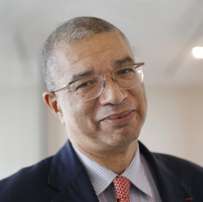

Second tour des élections
Zinsou vs Talon


%28.44
24.8%
Administration judiciaire
- Afin de séparer les pouvoirs exécutif et judiciaire, le Conseil Supérieur de la Magistrature (« CSM ») ne sera plus présidé par le Président de la République.
- Légiférer pour prévoir une élection du Président du CSM par ses pairs.
- Créer une base de données en ligne où seront recensés l’ensemble des textes de lois et des décisions de justice.
- Créer une plateforme de vulgarisation qui permettra de s’informer sur les aspects du droit à la fois en français et dans les langues nationales.
- Intégrer dans le système éducatif des modules de sensibilisation aux droits et aux devoirs.
- Mettre en place dans les communes des « Maisons de Justice » destinées à fournir une assistance juridique de proximité.
- Construire les 14 Tribunaux de Première Instance prévus par la loi et encore non construits à savoir les tribunaux d’Adjohoun, Comè, Malanville, Nikki, Avrankou, Sakété, Dogbo, Bohicon, Covè, Dassa- Zoumé, Savé, Bembèrèké, Kouandé et Tanguiéta.
- Créer des « Pôles financiers » spécialisés dans la lutte contre les crimes économiques.
- Assurer l’autonomie financière et décisionnelle de l’Autorité Nationale de Lutte contre la Corruption (« ANLC »).
- Légiférer pour encourager et protéger les lanceurs d’alerte.
- Accélérer et finaliser la dématérialisation des procédures administratives, fiscales et douanières afin de réduire les marges de fraude et de corruption dans les trois premières années du mandat présidentiel.
- Affecter rapidement les 38 nouveaux magistrats lauréats du concours de la magistrature en 2014, et organiser annuellement les concours de la magistrature et du greffe en adaptant les effectifs recrutés aux besoins.
- Le Président de la République ne siègera plus au sein du Conseil Supérieur de la Magistrature (CSM), afin que le pouvoir exécutif n’y joue plus un rôle prépondérant.
- Le Président de la Cour Suprême exercera les fonctions de Président du CSM.
- Rattacher l’Inspection Judiciaire au CSM.
- Accélérer la mise en œuvre de la carte judiciaire et rendre opérationnelles les Chambres Administratives et des Comptes dans les tribunaux et cours d’appel.
- Rattacher fonctionnellement la Police Judicaire au Ministère de la Justice.
- Mettre en place un pôle financier dans la chaîne pénale en vue de la répression efficace des infractions économiques.
- Créer une école dédiée exclusivement à la formation des magistrats.
Administration publique
- Recruter, dans les 100 premiers jours du mandat, les meilleures compétences pour la cinquantaine de postes stratégiques du pays.
- Réaliser l’informatisation complète de l’administration pour rendre possible une « e- administration » centrée sur les besoins des usagers, la rationalisation des processus et le désengorgement de l’administration centrale.
- Mettre en place un mécanisme récurrent d’audit par les cabinets externes des entreprises publiques.
- Mettre en place un mécanisme de publication annuelle des comptes des entreprises publiques.
- Mettre en place une agence de la gestion du portefeuille de l’Etat pour jouer notamment un rôle d’animation des entreprises publiques et de renforcement des conseils d’administration desdites entreprises.
- Renforcer les mécanismes d’évaluation et de publication annuelle des performances de l’administration publique.
- Renforcer le dialogue social en accompagnant la mise en place d’élections professionnelles longtemps retardées.
- Passer d’une administration d’autorisation à une administration de déclaration.
- Pourvoir les hautes fonctions de l’administration par appel à candidatures avec mandat et une rémunération conséquente. Les procédures d’appel à candidatures seront conduites par des cabinets indépendants spécialisés et de grande renommée.
- Procéder, conformément aux textes en vigueur, dans les corps en sous-effectif aux recrutements nécessaires en mettant l’accent sur la qualité.
- Accélérer la modernisation de l’administration publique en ce qui concerne notamment : les procédures, l’informatisation, l’archivage numérique et la dématérialisation.
- Garantir la fiabilité de l’information et favoriser la transparence dans l’application des procédures administratives.
Secteur d’activité primaire
- Créer une Banque Agricole dotée de 10 milliards de FCFA pour financer l’agriculture (crédit agricole).
- Créer un Crédit Agricole National représenté dans les 546 arrondissements afin d’accompagner le financement en capital et en dette des producteurs agricoles.
- Mettre en place une assurance agricole généralisée sur les récoltes.
- Mettre en place une garantie de l’Etat dans le financement des projets agricoles par la création d’un fonds commun de garantie.
- Créer un mécanisme d’achat/vente groupé à travers une agence d’achat et des structures de commercialisation dans le cadre coopératif.
- Généraliser la mise en place d’un préfinancement de récoltes et d’un financement de stocks aux agriculteurs afin de bénéficier des meilleurs prix.
- Améliorer les infrastructures rurales de transport (construction de pistes et de ponts) afin de désenclaver les zones agricoles et de réduire les pertes de récoltes.
- Encourager les entreprises locales à la transformation, l’emballage et le conditionnement de nos produits primaires (ananas, anacarde, mangue, karité, soja, tomate etc.) par la construction d’usines appropriées.
- Promouvoir à travers les CARDER l’utilisation maitrisée d’intrants (engrais, produits de traitement, semences améliorées) mais également des techniques agro-écologiques de gestion de la fertilité des terres et d’amélioration de la productivité (permaculture, technique de lutte contre l’érosion, etc.).
- Garantir l’accès égalitaire des femmes à la propriété foncière.
- Moderniser les formations agricoles afin de permettre aux futurs agriculteurs d’accéder à de solides connaissances techniques tout en maîtrisant les enjeux économiques du secteur.
- Accompagner les coopératives agricoles dans la mise en place de formations pour leurs membres. Développer en leur sein des fonctions de maintenance et de service aux agriculteurs (Vétérinaire, Normalisation etc.).
- Casser par le microcrédit et la répression, le cercle vicieux de l’endettement usuraire de la paysannerie pauvre.
- Accélérer l’exploitation des terres agricoles en produisant une carte nationale de la fertilité des terres et en mettant en œuvre une politique de promotion agricole basée sur les 8 zones agro-écologiques dès septembre 2016.
- Augmenter le crédit agricole du Fonds National de Microfinance de 4 à 50 milliards de FCFA d’ici 5 ans.
- Développer des emplois ruraux non agricoles qui accompagnent l’agriculture en rendant disponible l’énergie, l’eau et les technologies numériques.
- Déclarer l’agriculture comme secteur prioritaire d’investissement.
- 6 pôles régionaux de développement agricoles seront constitués, chacun doté de son propre programme de développement qui fixera plus précisément les vocations des terres, la localisation des infrastructures et des équipements structurants, les secteurs de l’économie à renforcer ou à développer et les patrimoines à préserver.
- Chaque pôle sera doté d’une école professionnelle agricole.
- Défiscaliser intégralement les exploitations agricoles (agriculture, élevage et pêche).
- Exonérer les produits d’alimentation animale de la TVA.
- Mettre en place un programme d’amélioration rapide des rendements pour porter la production cotonnière annuelle au delà̀ de 500.000 tonnes, tout en réduisant les superficies dédiées. A cet effet, les formules d’engrais seront actualisées et de nouveaux types de fumure seront introduits. Une nouvelle approche des techniques culturales sera adoptée pour parer aux incertitudes du climat.
- Subventionner et encadrer les autres filières agricoles phares, à savoir le maïs, le riz, l’ananas, et l’anacarde.
- Pour l'élevage:
- Développer la pratique de stabulation et d’embouche dans les bassins de production laitière et d’animaux de boucherie.
- La promotion de l’insémination artificielle pour l’amélioration des performances des races locales.
- Une couverture vaccinale plus adéquate en partenariat avec les vétérinaires privés pour assurer une meilleure maitrise des épizooties.
- La promotion de l’élevage de petits ruminants dans toutes les communes, en vue de couvrir à moyen terme les besoins nationaux en viande.
- L’entretien et la réalisation de points d’eau dans les couloirs de transhumance.
Aménagement du territoire
- Doter les communes de compétences et de ressources nouvelles ou existantes, pour assurer des tâches jusqu’ici moins bien gérées ou défaillantes au niveau national (hydraulique rurale, distribution d’eau potable, gestion de micro centrales électriques et de leurs réseaux locaux, boucles locales numériques, traitement des déchets et des eaux usées, transport urbains etc.).
- Fournir un appui budgétaire de la part de l’État pour l’édification de l’hôtel de ville de Porto-Novo.
- Développer l’assainissement, la lutte contre les inondations, et la gestion des déchets dans la ville de Cotonou.
- Réformer le statut des marchés de Dantokpa, Ganhi et Gbogbanou afin de permettre leur transfert à la commune de Cotonou.
- Réhabiliter les autres villes de taille intermédiaire.
- Doter chaque commune d’un Schéma Directeur d’Aménagement de Commune (SDAC) pour la gestion du développement urbain comprenant notamment la mise en place de stations d’épuration des eaux usées et l’aménagement de décharges contrôlées dans les grosses agglomérations du Bénin.
- Systématiser le recours au génie militaire pour l’exécution des travaux d’infrastructures en milieu rural.
- Assurer la mise à disposition de parcelles assainies (voie d’accès, eau, électricité) par les soins de l’Etat ou par des partenariats avec des investisseurs privés et réaliser au profit des populations à revenus modestes des logements à loyer modéré.
- Généraliser et accélérer la procédure d’obtention des certificats de propriétés foncières (titres fonciers) ainsi que la transformation des permis d’habiter : dans ce cadre, l’Etat mettra en place un dispositif et les mesures d’accompagnement nécessaires qui permettront la transformation à coût réduit de tous les permis d’habiter en certificats de propriétés foncières avant le 31 décembre 2017.
- Etablir le Plan Foncier Rural sur tout le territoire national. Contrôler le déclassement du foncier rural en foncier urbain et empêcher le morcellement du foncier rural (terres agricoles).
- Poursuivre la numérisation générale et couverture géodésique de tout le territoire béninois.
- Assainir et aménager les berges de la lagune de Cotonou et de son plan d’eau.
- Restructurer et moderniser le marché Dantokpa à Cotonou.
- Rénover le centre-ville Ganhi à Cotonou.
- Résorber et / ou réaménager des quartiers insalubres à Cotonou.
- Réaliser des infrastructures d’assainissement et de drainage des eaux de pluies à Parakou.
- Restructurer et moderniser le marché de Parakou.
- Moderniser le système de collecte, transport, traitement et élimination des ordures en décharges contrôlées.
Énergie
- Promotion de mini-centrales et augmentation de la capacité de production de l’électricité à 1000 MW sur cinq ans.
- Développer et renforcer les programmes d’accès à l’énergie tels que « Lumière pour Tous » qui visent à doter les établissements scolaires, les centres de santé et les familles du Bénin d’une capacité énergétique solaire minimum.
- Faire de l’accès à l’énergie un véritable droit social.
- Donner la priorité à la concurrence, privée et en régie municipale, dans l’ensemble de l’offre énergétique y compris pour les produits pétroliers. Limiter strictement le secteur public aux monopoles naturels.
- Ouvrir un dialogue national concerté et professionnel sur l’évolution du marché informel du « kpayo » de façon à dépénaliser la situation, à moderniser l’offre et à traiter les conséquences sociales de la modernisation, sans majorer significativement les prix.
- Mettre rapidement en œuvre un programme d’investissement pour la satisfaction des besoins des populations en énergie électrique et en eau potable. Dans les zones rurales, les énergies renouvelables, notamment les énergies solaires, seront la source principale de fourniture d’énergie électrique.
Culture, Art & Tourisme
- Développer la recherche en linguistique nationale pour lutter contre la disparition des langues minoritaires.
- Soutenir les artistes plasticiens, les musiciens, les créateurs audiovisuels et le spectacle vivant par une politique de commandes publiques de l’Etat, des communes, des entreprises publiques, des radios et des télévisions publiques.
- Inscrire au programme d’Investissement Public, les infrastructures culturelles telles que le Théâtre National, la réhabilitation des salles de spectacles, l’équipement technique des salles des fêtes, la création d’un Conservatoire National de Musique et de Studios d’enregistrement et la création de centres chorégraphiques nationaux pour la préservation des danses nationales et la danse contemporaine.
- Créer une Bibliothèque Nationale, accorder un soutien budgétaire aux communes pour la lecture publique, ainsi qu’à la création cinématographique et télévisuelle.
- Développer des musées locaux d’arts et traditions, créer un Mémorial de l’Histoire nationale, et un Mémorial du Général Mathieu Kérékou.
- Créer dans chaque Commune d’ici 5 ans, une « Maison des Jeunes et de la Culture » comportant des équipements de spectacles, une bibliothèque – médiathèque et proposant des formations.
- Créer un enseignement professionnel des métiers d’art au collège et à l’université en relation avec les perspectives d’emplois et l’existence de débouchés viables.
- Transformer le Fonds d’Aide à la Culture en Fonds de microcrédit spécifique de soutien à l’artisanat et à la culture.
- Rénover et protéger le site du Patrimoine mondial de l’UNESCO à Abomey.
- Achever le processus en cours du classement au Patrimoine mondial de Ouidah.
- Ouvrir les processus de classement au Patrimoine mondial de la capitale Porto Novo et de l’habitat et de la civilisation de l’Atacora.
- Exécuter en moins de 5 ans le projet « Culture et Tourisme » de la Banque Mondiale en cours de négociation.
- Redynamiser les semaines culturelles scolaires en leur donnant un contenu réel (organisation de concours artistiques entre établissements).
- Mettre en place des programmes médias pour l’initiation à l’art.
- Organiser des festivals et des concours par région pour la détection des vocations et talents.
- Créer des centres de formation pluridisciplinaires pour les vocations et talents ainsi que pour les artistes confirmés.
- Accompagner et soutenir les artistes confirmés pour leur promotion à l’international (Biennales, FIAC, A.54 Contemporary African Art Fair, etc.).
- Réhabiliter et redynamiser le Festival International de Théâtre du Bénin (FITHEB).
- Exonérer les œuvres et les prestations d’art de la Taxe sur la Valeur Ajoutée (TVA).
- Mettre en place des mesures d’accompagnement de l’artiste en partenariat avec des établissements financiers.
- Faire appel à l’expertise internationale pour évaluer le patrimoine touristique et identifier les partenaires, investisseurs et/ou financiers et/ou opérateurs pour la création de divers projets.
- Créer et promouvoir la création de centres de formation professionnelle du personnel du secteur touristique.
- Enrichir le potentiel animalier, améliorer l’accessibilité et développer les offres d’hébergement pour les parcs nationaux Pendjari et W.
- Le patrimoine géoculturel de la région nord-ouest : culture et habitat (tata) Somba, relief et climat.
- Améliorer un circuit de découverte du patrimoine géoculturel de la région nord-ouest (habitat et culture Bétamaribè).
- Aménagement du site de la Grotte Mariale Notre Dame d’Arigbo de Dassa Zoumé et du site de pèlerinage des fidèles du Christianisme de Sémé Kpodji.
- Réhabiliter et valoriser davantage l’ensemble du patrimoine historique (royaume d’Abomey et son village souterrain, route des esclaves à Ouidah).
- Implanter une zone balnéaire sur la côte maritime Cotonou – Grand Popo.
- Réhabiliter et dynamiser le festival Gospel et Racines.
- Assainir et améliorer les habitats et l’environnement des villages lacustres pour rendre l’ensemble du patrimoine conforme aux standards internationaux du tourisme.
- Sensibiliser les responsables des cultes Vaudou sur la valeur touristique et économique du patrimoine Vaudou.
- Construire dans les régions des arènes pour des parades publiques et pour l’expression de l’art et de la culture Vaudou.
- Instaurer le festival Vaudou à caractère international.
Diaspora & Coopération internationale
- Faire de notre mandat à la présidence de la Commission de la CEDEAO un mandat décisif pour l’accélération des travaux vers une monnaie unique.
- Porter l’idée d’une convergence des primaires constitutionnelles au sein de la zone CEDEAO.
- Négocier dans le cadre de l’Union Africaine la suppression des barrières à la circulation des personnes et des biens entre les pays de la CEDEAO, la CEMAC, la CEAC…
- Créer une direction de la prévision et de la stratégie au Ministère des affaires étrangères.
- Augmenter le nombre de nos représentations diplomatiques et proposer à titre expérimental, pour certains pays, un service diplomatique commun de la CEDEAO.
- Mettre en place un régime fiscal favorable dont une exonération d’impôt sur les revenus pendant la première année d’installation.
- Mettre en place un cadre d’exonération des droits de douane sur les effets personnels.
- Mettre en place des politiques d’incitation visant à la mobilisation de l’épargne de la diaspora.
- Mettre en place une base de données des compétences des Béninois de l’extérieur à destination des investisseurs étrangers, des entreprises locales et de l’administration pour répondre à leurs besoins.
- Proposer une réforme constitutionnelle visant à introduire à terme l’élection de députés de la Diaspora.
- Mettre en place une plateforme internet dédiée qui offrira la possibilité d’effectuer toutes les démarches administratives en ligne.
- Identifier les personnes les plus compétentes quelles que soient leurs couleurs politiques pour assurer les fonctions diplomatiques dans le nouveau contexte de la Diplomatie de Développement.
- Fermer les représentations diplomatiques de peu d’intérêt.
- Rationaliser l’effectif du personnel des représentations diplomatiques en fonction des besoins réels.
- Améliorer la qualité des services en assurant au personnel les formations adéquates.
- Mettre en œuvre une diplomatie plus efficace envers le Nigeria en vue de permettre le libre échange commercial, conformément aux dispositions des accords communautaires et bilatéraux.
- Mettre en place un programme d’incitation de l’investissement au Bénin pour la diaspora basé sur un accord fiscal avec les pays de résidence. Dans ce cas, l’Etat béninois prendra partiellement en charge l’incidence fiscale des revenus investis par la diaspora.
Éducation
- Généraliser les cantines pour soutenir l’équilibre nutritionnel des enfants du Bénin, tout en facilitant la généralisation de la scolarisation.
- Mettre en place un système de bus scolaire gratuit pour les écoles publiques.
- Favoriser un large accès au numérique pour les collèges.
- Développer la formation à distance et le non-présentiel pour les étudiants.
- Renforcer l’enseignement des sciences mathématiques dans le secondaire.
- Poursuivre l’amélioration de la condition et du statut des enseignants des trois ordres (primaire, secondaire et universitaire).
- Eradiquer en 5 ans la précarité dans les métiers d’enseignement.
- Elargir l’accès à l’éducation et atteindre sur 10 ans l’objectif de scolarisation à 100% jusqu’à 16 ans.
- Développer l’histoire et la culture du Bénin dans les programmes de l’enseignement secondaire, y compris dans les établissements étrangers.
- Soutenir la lecture publique : ouverture de bibliothèques et généralisation de l’expérience de « cartable numérique » du collège de Dassari, en partenariat avec le Congo.
- Introduire expérimentalement l’enseignement d’une langue locale et de l’anglais dès le primaire.
- Expérimenter l’enseignement du codage informatique dans l’école publique et subventionner les expérimentations privées et associatives.
- Mobiliser la diaspora exerçant dans le secteur de l’enseignement supérieur pour offrir des opportunités à nos compatriotes au Bénin, encadrer les mémoires et les thèses et dispenser des séminaires de formation.
- Améliorer les moyens matériels de la condition enseignante notamment dans les établissements isolés. Dans les zones défavorisés, l’Etat devra pourvoir les enseignants de moyens de mobilité et de communication et subventionner l’électricité et le logement.
- Soutien aux établissements privés par des partenariats, des subventions ou des mesures de défiscalisation.
- Poursuivre la construction, la réhabilitation et l’équipement des infrastructures scolaires.
- Initier le soutien pour l’éducation des personnes handicapées.
- Renforcer l’orientation professionnelle du système éducatif en créant un bureau de l’emploi et des stages dans les universités.
- Maintenir les filles dans le système éducatif notamment les élèves enceintes.
- Programme spécifique d’incitation à la scolarisation des filles.
- Recrutement d’enseignants titulaires de diplômes académiques et pédagogiques délivrés par des structures de formation agréées et mise en place d’un programme spécial pour le renforcement des capacités des enseignants en poste.
- Création de lycées scientifiques par département.
- Encouragement de la créativité et des inventions au niveau des enseignements technique et professionnel, à travers des fonds compétitifs mis à la disposition des lycées.
- Mise en place d’une politique adaptée de formation et de contrôle de compétences des formateurs des enseignants.
- Financement de la recherche fondamentale et appliquée en apportant des moyens suffisants aux universités, aux écoles doctorales et aux chercheurs.
- Redéfinir les cartes scolaire et universitaire pour intégrer la vision en matière d’enseignement, de formation et de recherche. Ces nouvelles cartes prendront en compte un système éducatif bilingue intégrant très tôt l’outil informatique.
- Créer une Direction de la Formation et Contrôle Qualité au sein des ministères en charge des Enseignements Maternel et Primaire, ainsi que Secondaire, Technique et Professionnel.
- Réhabiliter et réformer le Conseil National de l’Éducation avec pour mission de définir et suivre une politique cohérente de l’Éducation Nationale (de l’école maternelle à l’université).
- Réhabilitation et construction de résidences universitaires.
- Prioriser l’investissement dans les filières cibles (sciences, technologies, ingénierie et mathématiques) pour répondre aux besoins de développement en adéquation avec le marché de l’emploi.
- Créer l’Agence pour la Qualité et l’Évaluation dans l’Enseignement Supérieur mettant en place des procédures internes et systèmes d’évaluation permettant aux établissements de l’enseignement supérieur d’atteindre un niveau d’excellence académique.
- Créer une Zone Franche du Savoir et de l’Innovation en partenariat avec le secteur privé et écoles internationales pour soutenir les écoles prioritaires, la recherche et les incubateurs.
Économie & fiscalité
- Créer un Fonds Souverain de 400 milliards FCFA alimenté par une partie des provisions techniques de la Caisse Nationale de Sécurité Sociale. Ce fonds permettrait d’accompagner l’investissement en capital dans les grands projets des entreprises et de l’Etat.
- Réformer le Ministère du développement pour permettre au pays en 5 ans d’absorber les deux tiers de l’aide qui lui est accordée au lieu du tiers atteint depuis des années.
- Élargir l’assiette fiscale pour mobiliser les ressources propres nécessaires au financement du développement en mettant en place une fiscalité effective et au service du développement ; viser d’ici 2021 de passer de 18% à 25% du PIB en prélèvements obligatoires.
- Créer des banques spécialisées pour le financement des activités des PME/PMI.
- Créer le cadre réglementaire pour la mise en œuvre du financement participatif « crowdfunding » notamment pour faciliter l’investissement.
- Développer les flux d’investissements directs étrangers, en fournissant notamment des avantages fiscaux à l’installation des sièges d’entreprises à vocation sous régionale au sein de la CEDEAO.
- Accroître les financements par endettement sur les marchés obligataires régional et international et obtenir un rating national.
- Obtenir un « rating » (notation) des plus grandes villes et les introduire sur le Marché financier régional d’ici 5 ans.
- Diversifier l’octroi des crédits entre les milieux urbain et rural et entre les secteurs porteurs.
- Rendre plus transparentes les règles d’intervention du FNPEEJ et du FNM en rendant publiques les procédures de sélection ainsi que les secteurs et les entreprises ayant bénéficié de leur soutien.
- Créer une Banque de Développement des Entreprises présente dans chaque commune.
- Négocier dans le cadre de l’UEMOA les conditions de crédit des institutions de microfinance telles que leurs besoins de fonds propres soient réduits.
- Favoriser et encourager la sous-traitance grâce à la formation numérique dans des métiers spécifiques tels que l’expertise comptable, l’IT, la traduction, le secrétariat, la gestion de la logistique etc.
- Créer une agence de développement économique dans chaque département, gérée sous forme de groupement intercommunal.
- Ouvrir les négociations entre l’État, les partenaires sociaux et le patronat pour relever significativement le SMIG.
- Supprimer les droits sur les successions – pour les successions de biens, meubles, et immeubles. Fixer un barème fixe pour les frais de notaires.
- Accélérer la transformation de permis d’habitation en certificat de propriété foncière (titre foncier) à coût réduit.
- Exonérer les droits de douane et la TVA à l’importation de véhicules neufs pour les sociétés et établissements de transports de marchandises.
- Revoir la fiscalité sur les bas salaires.
Emploi pour les jeunes
- Offrir immédiatement aux jeunes qualifiés des emplois d'intérêt public au niveau des communes. Les emplois seront financés par l'État à raison de 30 000 postes de travail par an pour deux ans.
- Encourager l’auto emploi des jeunes et apporter un soutien aux jeunes entrepreneurs, en exonérant les entreprises du BIC pendant les deux premières années.
Environnement
- Mettre en œuvre les Contributions Prévues Prises au Niveau National du Bénin à la COP 21 et mobiliser les 28 millions de dollars US attendus dans le cadre la contribution conditionnelle.
- Interdire définitivement l’usage des sachets en plastique et les remplacer par des sachets en papier.
- Créer une Agence nationale de gestions des déchets sous la tutelle du Ministère de l’Environnement.
- Doter chaque commune d’un centre de gestion des déchets valorisant les produits recyclables, et chaque département d’une centrale électrique alimentée par les déchets et la biomasse des communes du département.
- Sanctuariser la route des pêches en créant un parc naturel national.
- Rétablir la subvention du prix d’achat du gaz à usage domestique au profit des ménages.
- Voter une loi pour interdire à court terme l’usage de sachets non biodégradables.
- Faire construire en partenariat avec le secteur privé des usines de fabrication de sachets biodégradables.
- Veiller à la mise en œuvre effective du principe du pollueur payeur sur toute l’étendue du territoire.
- Élaborer des plans d’atténuation et d’adaptation aux changements climatiques.
Réforme politique
- Préserver les acquis de la Conférence des Forces Vives de la Nation, en confirmant les options fondamentales telles que la limitation du nombre de mandats présidentiels à un mandat renouvelable une fois, la limitation de l’âge d’accès à la magistrature suprême, le régime républicain, la laïcité de l’Etat ainsi que la garantie des droits fondamentaux.
- Créer une Cour des Comptes autonome dotée d’un budget propre en lieu et place de la Chambre des Comptes de la Cour Suprême afin d’opérer un contrôle effectif du budget de l’Etat et des entités publiques.
- Constitutionaliser la Commission Electorale Nationale Autonome (« CENA »).
- Renforcer la liberté de la presse en modifiant les règles de nomination du Président de la Haute Autorité de l’Audiovisuel et de la Communication (« HAAC »). Il s’agira notamment de faire élire le Président de la HAAC par les neufs (09) conseillers siégeant en son sein.
- Amender la loi portant Charte des Partis politiques en République du Bénin afin d’y renforcer l’arsenal relatif au financement public des partis politiques.
- Initier et faire voter un projet de loi contre la « transhumance politique ».
- Modifier la structure de la Cour Constitutionnelle, ainsi que la durée du mandat et le mode de désignation de ses membres, de manière à assurer son indépendance vis-à-vis des institutions dont elle est chargée de contrôler les actes. À cet effet, le Président de la République et le Bureau de l’Assemblée Nationale n’auront plus à designer les membres de la Cour Constitutionnelle.
- Le Président de la Cour Suprême ne sera plus nommé par le Président de la République, mais élu par les membres de la Cour Suprême. La Chambre des Comptes sera retirée de la Cour Suprême et érigée en institution constitutionnelle de la République dénommée Cour des Comptes. Le Président de la Cour des Comptes sera élu par les membres de la Cour des Comptes.
- Le Président de la Haute Autorité de l’Audiovisuel et de la Communication (HAAC) ne sera plus nommé par le Président de la République, mais élu par ses pairs parmi les professionnels des médias.
- Instaurer dès 2016 une allocation annuelle correspondant à 0.5% minimum des ressources propres de l’État, à répartir entre les partis politiques représentatifs au prorata de leur poids électoral pondéré par la répartition géographique de ce poids.
- Instaurer le mandat unique pour la présidence de la république, et introduire les conditions d’éligibilité suivantes: n’avoir jamais été Président de la République du Bénin à l’exception des intérims assurés par le Président de l’Assemblée Nationale ou le Président de la Cour Constitutionnelle.
- Interdire tout ce qui concourt au culte de la personnalité du Président de la République, notamment: louanges publiques, marches publiques de remerciement et de soutien, affichage de l’image du Président dans les lieux publics.
Protection sociale
- Mettre en place graduellement et de façon inconditionnelle des transferts sociaux en numéraire aux 100,000 familles béninoises vivant dans l’extrême indigence, à raison de 100,000 FCFA par famille et par an.
- Ouvrir des droits sociaux dans le secteur informel tels que la sécurité sociale ou la micro-assurance afin de sortir les travailleurs de la précarité et de faciliter la reconversion vers le secteur formel.
- Créer dans l’immédiat un cadre formel et sécurisé pour l’activité des taxis moto « Zemidjans », à travers la réduction jusqu’à 45% du loyer de la moto, la mise en place d’un forfait d’assurance et d’un programme de réinsertion professionnelle.
- Aider au développement de services à valeur ajoutée pout les Zemidjans, comprenant un abonnement avec un paiement par mobile, le « Zem touristique », la livraison à domicile, etc.
- Promouvoir les normes de construction des édifices publics qui facilitent leur accessibilité aux personnes handicapées.
- Veiller au respect d’un quota de recrutement d’au moins 1% de personnes vivant avec un handicap dans les recrutements de la fonction publique.
- Prévoir, sous condition, une exonération totale de la charge patronale sur la masse salariale des personnes en situation de handicap et recrutées dans les entreprises privées.
- Mettre en place une déduction fiscale plafonnée et conditionnée pour l’aide aux personnes du troisième âge soutenues par leurs familles.
- Rendre obligatoire le versement des pensions et retraites dans les 3 mois suivant la cessation d’activité.
- Développer le Régime d’Assurance Maladie Universelle (RAMU).
- Travailler à rétablir la confiance avec les partenaires sociaux en ouvrant des tables rondes dans les six premiers mois du mandat présidentiel.
- Encourager et protéger le syndicalisme dans le secteur privé.
- Lutter contre les mariages précoces (lois de protections des mineures et sensibilisation des parents).
- Promouvoir la parité dans le recrutement des grands postes de la fonction publique.
- Sanctionner sévèrement toute forme de violence faite aux femmes.
- Prendre des mesures pour mettre fin aux phénomènes de vidomegon.
- Renforcer la protection des femmes travailleuses domestiques.
- Favoriser la participation des femmes dans les sphères publiques et politiques avec des mesures spéciales et temporaires de quotas pour atteindre la parité.
- Mettre en place des cours pour adultes destinés à réduire le fort taux d’analphabétisme féminin.
- Mettre en place une politique de protection sociale (assurance maladie et retraite) avec cotisations individuelles des concernés complétées par une subvention de l’État.
- Revoir la gouvernance de la Caisse Nationale de Sécurité Sociale (CNSS) et réorienter l’implication de l’Etat vers le contrôle de sa gestion.
- Améliorer le cadre législatif et règlementaire en matière de protection sociale.
- Mettre en place une fiscalité spécifique incitative à la formalisation des exploitants agricoles, artisans, petits commerçants et artistes.
- Mettre en place un système d’identification biométrique.
Santé
- Assurer d’ici 2018 la mise en place du projet d’Hôpital de Référence en partenariat public-privé initié en 2014 et capable de capter une partie du marché régional de soins à l’étranger.
- Rendre effective la carte sanitaire du Bénin d’ici 5 ans.
- Effectuer des accords avec d’autres organismes hospitaliers internationaux et promouvoir les échanges et l’expertise.
- Renforcer le système de veille épidémiologique d’alerte précoce sanitaire.
- Mettre en place une politique d’assainissement de nos bidonvilles ainsi qu’une politique d’hygiène sociale.
- Permettre une autonomisation énergétique et en eau potable des centres de santé.
- Revoir l’approvisionnement des médicaments avec la Centrale d’achat et lutter contre la vente illicite de médicaments.
- Asseoir une meilleure politique en matière d’imagerie médicale et de maintenance biomédicale.
- Accentuer le volet prévention – éducation notamment dans la prévention alimentaire, l’éducation sexuelle, la promotion du sport et des bonnes conduites, l’assainissement de l’environnement.
- Assurer la gestion numérique du système de santé en vue de garantir l’accès des populations à des soins de santé de qualité.
- Entreprendre immédiatement une négociation sociale avec le personnel de santé en vue de satisfaire au mieux les revendications.
- Développer le dispositif de la médecine d’urgence.
- Prendre des mesures incitatives (financières, fiscales, etc.) pour favoriser l’implémentation par le secteur privé de centres de diagnostic (laboratoire biomédical, imagerie médicale, etc.).
- Mettre en place dans le cadre de partenariats public-privé : un laboratoire national de recherche de grande renommée en pharmacie pour capitaliser les atouts nationaux de la pharmacopée et un centre hospitalo-universitaire de référence internationale.
- Revoir le cadre réglementaire de la distribution des médicaments au Bénin en concertation avec les acteurs ; assurer le contrôle efficace des médicaments commercialisés sur le marché.
- Mettre en place de manière effective un dispositif d’assurance maladie permettant l’accès au plus grand nombre aux soins de santé.
- Maintenir la gratuité des soins de santé (paludisme et césarienne pour les femmes enceintes et paludisme pour les enfants de 0 à 5 ans).
Sécurité & Défense
- Mettre en œuvre les réformes nécessaires pour faire des Forces armées nationales de véritables forces de défense bien équipées, entraînées, disciplinées, respectueuses des lois et règlements de l’Etat, de la dignité humaine et des populations.
- Mettre en place un régime spécial de sécurité sociale au profit du corps sécuritaire, afin d’améliorer les conditions de travail des forces de défense et de sécurité.
- Moderniser les équipements pour un maillage sécuritaire plus efficace des zones frontalières (terre, mer et air).
- Développer la police de proximité en relation avec les collectivités décentralisées.
- Développer la formation continue et la réorientation professionnelle du personnel des Forces de sécurité publique afin de les familiariser aux nouvelles formes de criminalité et aux nouvelles menaces sécuritaires.
- Travailler efficacement avec les pays voisins pour une lutte effective contre le terrorisme.
- Améliorer les conditions de travail du personnel de la Police et de la Gendarmerie Nationales.
- Améliorer le cadre de vie dans les casernes à travers un programme d’investissement dans les infrastructures.
- Mettre en œuvre un déploiement efficace des Forces de Défense aux frontières pour une meilleure surveillance du territoire.
- Développer le corps des Pompiers pour une meilleure couverture du territoire national (équiper, recruter et former).
- Restructurer, former et équiper les services du renseignement de manière à privilégier, en lieu et place du renseignement politique exclusif, les renseignements de surveillance du territoire et d’ordre sécuritaire au service des populations prioritairement.
Sport
- Créer et mettre à niveau des infrastructures sportives (terrains, gymnases)
- Développer une politique du sport à l’école, comportant des sections sport-études, et mettre en place des bourses universitaires octroyées sur la base de l’excellence sportive.
- Refonder sous contrat avec l’Etat et financer les fédérations amateurs et professionnelles qui accepteront la transparence de la gouvernance et le contrôle de la Chambre des Comptes (puis de la Cour des Comptes).
- Pour les fédérations sous contrat, viser des performances internationales et conditionner le soutien financier aux résultats.
- Créer un Centre national de formation et d’entraînement pour les athlètes de niveau international et organiser leur formation à l’étranger pour les disciplines qui l’exigent.
- Créer un cadre légal pour les agents de sportifs.
- Mettre en place une politique responsable de partenariat avec le secteur privé pour le développement des écoles à vocation sportive (sport-études).
- Développer les compétitions sportives en milieux scolaire et universitaire, afin de détecter et suivre les talents.
- Instaurer des bourses de formation à l’étranger dans diverses disciplines sportives.
- Mettre en place une politique de promotion de l’investissement privé dans le sport, avec une défiscalisation intégrale.
- Instaurer dans les chefs-lieux des départements, à travers les contrats État-Communes, des Associations Sportives Départementales subventionnées. Ces dernières auront l’obligation de créer et d’entretenir des équipes départementales dans les quatre disciplines ci-après au minimum : athlétisme, football, basketball et handball.
- Promouvoir le professionnalisme dans toutes les disciplines sportives. Les salaires des sportifs professionnels seront défiscalisés.
Médias & TIC
- Créer une zone économique prioritaire pour les startups du numérique
- Achever la privatisation de Bénin Telecoms en veillant à la qualité et à la concurrence dans les prestations des opérateurs de télécommunication.
- Veiller à la rapidité des évolutions réglementaires par exemple en matière de crowdfunding et d’e-commerce.
- Créer une structure de promotion des contenus locaux numériques (recherche de nouveaux marchés, exportation de services numériques, promotion de la destination Bénin pour la délocalisation etc.).
- Créer un quartier numérique doté d’une des meilleures connexions Internet d’Afrique de l’ouest.
- Renforcer les capacités d’intervention de l’Arcep (Autorité de régulation des communications électroniques et des postes).
- Favoriser le développement de l’écosystème des paiements dématérialisés (paiement mobile, par internet etc.). Le paiement par mobile sera encouragé par la possibilité de régler sous cette forme tout paiement à l’Etat ou aux entreprises publiques.
- Accompagner en parallèle l’administration et les entreprises publiques vers la dématérialisation de tous leurs flux financiers (impôts, taxes, salaires des fonctionnaires, pensions, factures d’eau et d’électricité etc.).
- Favoriser l’information, les déclarations et le paiement en ligne des taxes et impôts.
- Apporter un appui financier aux entreprises TIC en démarrage.
- Promouvoir les incubateurs mettant à disposition des locaux, des équipements et des services pour les jeunes entreprises
- Lancer des concours pour sélectionner, subventionner et promouvoir les projets les plus innovants
- Mettre en œuvre un plan d’investissement massif pour les infrastructures TIC : extension du câblage en fibre optique sur tout le territoire béninois.
- Procéder à la libéralisation effective des fréquences radio et télévision
- Défiscaliser les activités de presse.
Transport & Commerce
- Construire 4 ports secs (Parakou, Allada, Bohicon et Tori).
- Mettre en place une usine d’assemblage Bajaj.
- Construire 1600 km de voies bitumées.
- Construire un deuxième pont à l’entrée de Porto-Novo.
- Finaliser la rocade de Porto-Novo.
- Poursuivre le projet de construction de la boucle ferroviaire, Cotonou-Niamey, Ouidah-Cotonou-Sèmè, et Cotonou-Lomé.
- Construire l’aéroport international de Glodjigbé, et en faire un « hub » sous régional, en jouant sur la position géographique du Bénin.
- Rendre le port de Cotonou plus compétitif en accélérant notamment l’aménagement du quai nord.
- Construire un port en eau profonde à Sèmé.
- Poursuivre le développement du circuit routier du grand Cotonou notamment par la construction de la corniche Calavi- Cotonou et le pavement de la route des pêches à Fidjrosse.
- Initier la création d’une zone franche commune entre le Bénin et le Nigeria intégrant notamment une juridiction commune traitant à la fois du droit OHADA et du Common Law.
- Permettre la délivrance de visa aux frontières.
- Démarrage et réalisation du quatrième pont et de la voie rapide de contournement Nord-ouest de Cotonou vers Abomey Calavi.
- Réalisation de l’Aéroport International de Glodjigbe avec redimensionnement de la voie Cotonou-Calavi et Glodjigbe.
- Réalisation du tronçon d’autoroute Sèmè-Kpodji à Porto Novo.
- Réalisation d’un nouveau pont et réhabilitation des infrastructures routières à Porto-Novo.
- Réhabilitation des infrastructures routières à Parakou.
- Veiller au respect de la libre concurrence en mettant en place une commission mixte public-privé d’observation des distorsions dans le secteur afin de prendre des mesures correctrices
- Accélérer le processus d’intégration sous régionale en vue d’assurer la libre circulation effective des biens et des personnes
- Remédier au harcèlement par les services de contrôle fiscal en procédant à une réforme des procédures de contrôle, de notification, de recouvrement (commandement et saisie) fiscal
- Dans le domaine de l’exportation, mettre en place des mesures incitatives en matières administrative et fiscale ainsi que les infrastructures et équipements nécessaires pour doper les produits d’exportation.
Mots-clés